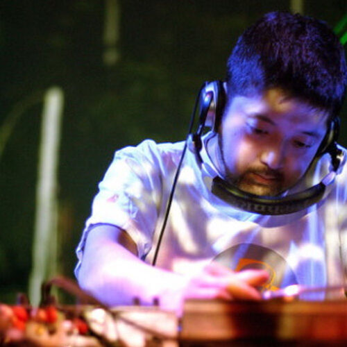

Jun Seba
Jun Seba, dit Nujabes né le 7 février 1974 à Adachi à Tokyo et mort le 26 février 2010 à Shibuya, était un producteur de hip-hop, de trip hop et un DJ japonais. Son second album, Modal Soul , est considéré comme exemplaire pour ce genre de musique. Il meurt d’une mort soudaine et inattendue à l'âge de 36 ans, suite à un accident de voiture provoqué sur l'autoroute Shuto traversant le centre de Tokyo.
Nujabes en train de mixer.
Shinichiro Watanabe et Samurai champloo
Samurai Champloo est une série télévisée d'animation de
26 épisodes de 24 minutes qui a été diffusée sur Fuji TV au Japon à
partir du 19 mai 2004. L'histoire se déroule dans une version fictive de
l'ère Edo au Japon (époque de domination du
shogunat Tokugawa -> régime politique). Une jeune fille nommée
Fuu, recherche un samouraï qui sent le tournesol et se fait accompagner
par deux individus, Mugen, extravagant, ancien pirate devenu vagabond,
et Jin, un samouraï impassible, à la suite d'un pari qu'elle a « gagné »
contre ces deux derniers.
En feat avec Fat Jon, Nujabes créa plusieurs musiques
présentes dans la série Samurai champloo, dont
Aruarian Dance. Ce morceau apparait dans l’épisode 6: Stranger Searching.
Shinchiro Watanabe au Japan-Expo en 2009.
« When you're making anime, if you get all of your inspiration from anime... it's going to lack originality and creativity, so I try to get my inspiration from different genres. » Shinchiro Watanabe